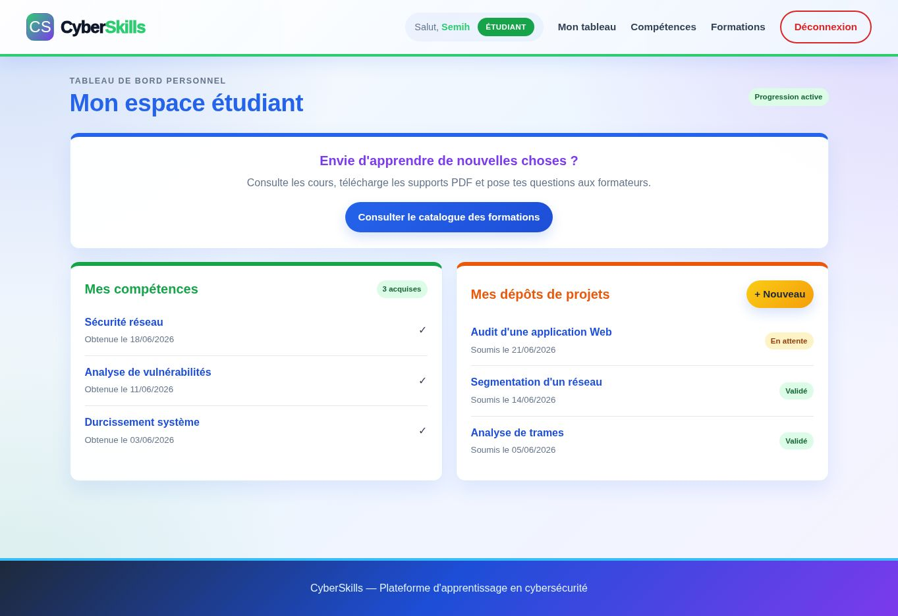
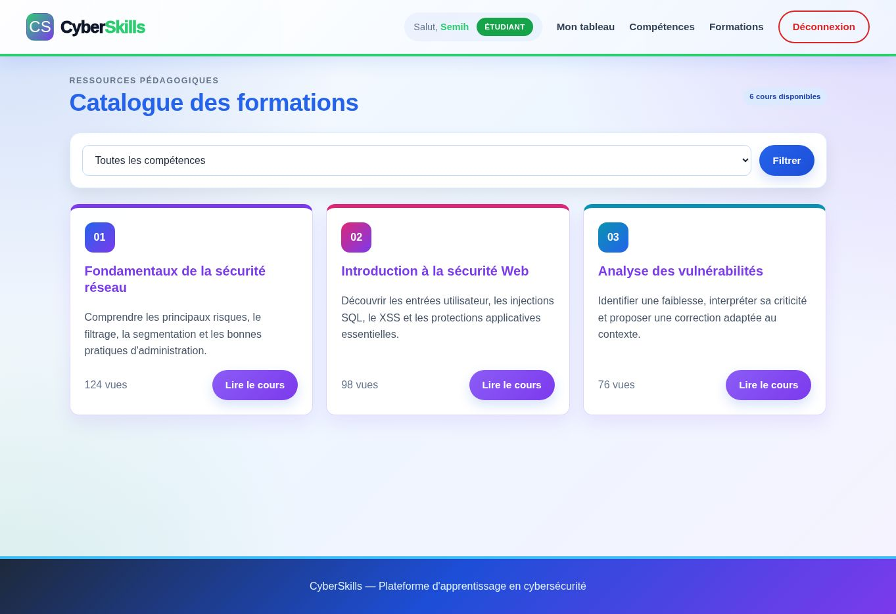
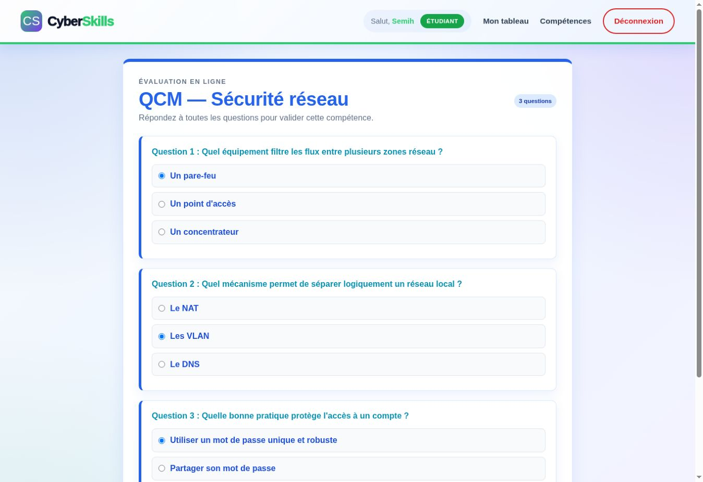
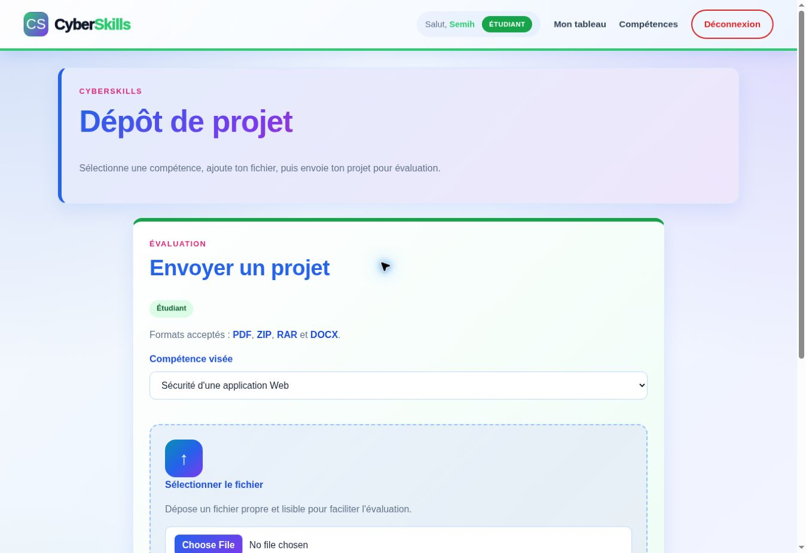
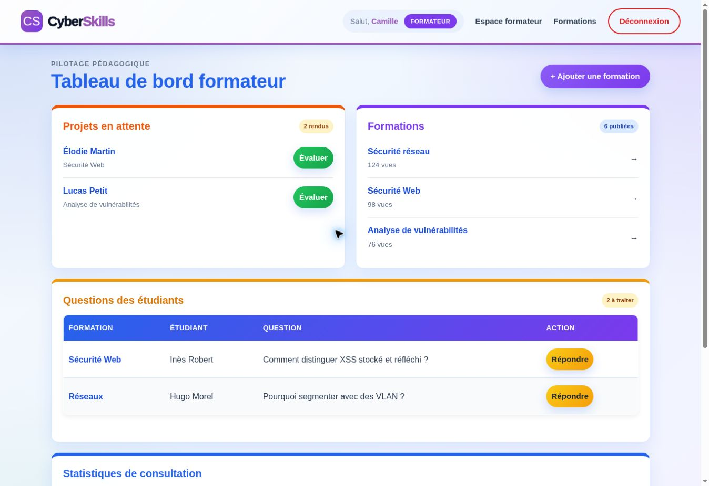
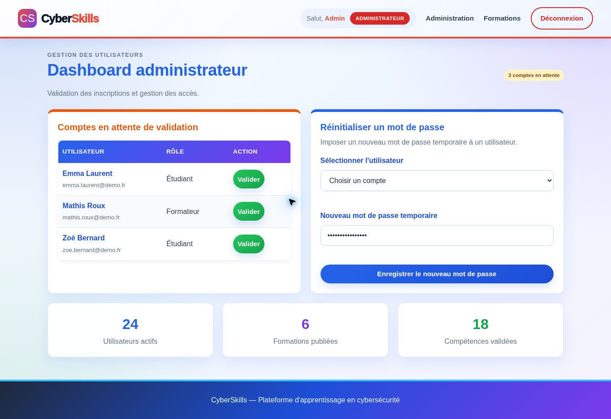

Créer un compte
L'utilisateur s'inscrit, choisit son profil et attend la validation de l'administrateur.
CyberSkills est une plateforme web pédagogique développée dans le cadre de la SAÉ 2.03. L'objectif était de réunir, dans une seule application, l'apprentissage de la cybersécurité, la validation de compétences et le suivi de la progression.
La solution accompagne trois profils complémentaires. L'étudiant consulte des formations, passe des QCM ou dépose un projet. Le formateur publie les supports, répond aux questions et évalue les rendus. L'administrateur contrôle les comptes et les accès. Toutes ces actions s'appuient sur une base de données relationnelle commune.
La plateforme relie l'inscription, l'apprentissage, l'évaluation et l'acquisition d'une compétence dans un même parcours.
L'utilisateur s'inscrit, choisit son profil et attend la validation de l'administrateur.
L'étudiant filtre le catalogue, consulte les cours PDF et échange avec un formateur.
La compétence est travaillée par un QCM noté ou par le dépôt d'un projet.
Le tableau de bord affiche les compétences obtenues et le statut des rendus.
J'ai pris en charge le développement complet de la solution : modélisation des données, logique PHP, requêtes SQL, contrôle des accès, téléversement de fichiers, tableaux de bord et interface responsive.
Mon périmètre : concevoir une application cohérente de bout en bout, capable de proposer un contenu différent selon le rôle connecté tout en conservant les données de formation, d'évaluation et de progression synchronisées.
Conception d'un modèle relationnel reliant utilisateurs, rôles, formations, compétences, QCM, questions, réponses et soumissions. Utilisation de PDO, de requêtes préparées, de jointures SQL et de tables de liaison.
Inscription, hachage et vérification des mots de passe, validation préalable des comptes, création de sessions et restrictions d'accès adaptées aux trois profils.
Catalogue filtrable, lecture des supports PDF, questions aux formateurs, passage de QCM, dépôt de projets, historique des soumissions et consultation des compétences acquises.
Ajout de formations liées à une ou plusieurs compétences, traitement des questions, ouverture et évaluation des rendus, attribution de compétences et suivi des consultations.
Validation des nouveaux comptes, distinction des rôles, liste centralisée des utilisateurs et réinitialisation des mots de passe avec stockage haché.
Tableaux de bord différenciés, identité visuelle propre à chaque rôle, mise en page responsive et graphique Chart.js pour comparer le nombre de vues des formations.
Chaque rôle possède ses propres actions, tandis que les informations circulent entre les tableaux de bord.
password_hash() et vérification avec password_verify()htmlspecialchars()Ces écrans ont été capturés depuis une version de démonstration locale construite avec les vrais templates et la feuille de style de CyberSkills. Les noms et les chiffres affichés sont fictifs afin de ne publier aucune donnée de compte réelle. Cliquez sur une image pour l'ouvrir en taille réelle.






Les principaux défis venaient moins d'une page isolée que des interactions entre les rôles, la base de données et les deux méthodes de validation d'une compétence.
Un même utilisateur ne devait voir que les pages et les actions autorisées pour son profil.
Réponse apportée : centralisation des contrôles de session et de rôle, puis vérification supplémentaire sur les pages sensibles.
Une compétence peut être obtenue automatiquement après un QCM réussi ou manuellement après l'évaluation d'un projet.
Réponse apportée : contrôle anti-doublon avant attribution et transaction lors de la validation d'un rendu.
Le dépôt de projets ne devait pas accepter un fichier dangereux simplement renommé avec une extension autorisée.
Réponse apportée : liste blanche des formats, contrôle du type MIME et génération d'un nom de stockage unique.
Formations, compétences, utilisateurs, résultats et statistiques sont reliés et doivent rester cohérents après chaque action.
Réponse apportée : modèle relationnel, clés de liaison, jointures SQL, requêtes préparées et transactions pour les écritures multiples.
Le résultat est une application pédagogique multi-rôles qui couvre tout le cycle de progression : création et validation d'un compte, accès aux ressources, évaluation, attribution d'une compétence et suivi depuis des tableaux de bord dédiés.
Les étapes d'apprentissage, d'évaluation et de suivi sont réunies dans une navigation adaptée à chaque utilisateur.
Les contenus, statuts, scores, compétences et statistiques sont issus de MySQL et affichés selon le contexte connecté.
L'authentification, les autorisations, les entrées utilisateur et les téléversements ont été traités comme des contraintes transversales.
PHP, PDO, modélisation SQL, sessions, gestion de fichiers, logique métier, JavaScript, Chart.js et conception responsive.
Ce projet m'a appris à penser une application comme un ensemble cohérent plutôt que comme une succession de pages. La réalisation complète de CyberSkills m'a permis de relier base de données, sécurité, logique métier et expérience utilisateur dans un même projet full-stack.